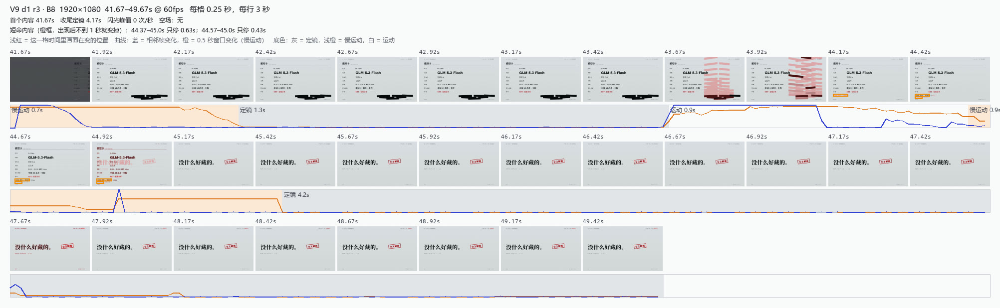
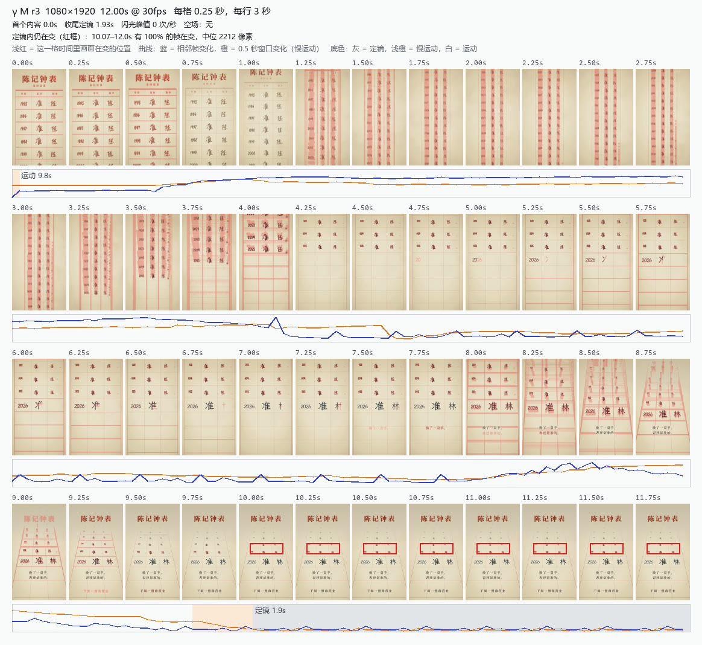

给每支片做一份从像素算出的时间总览。我先自己读已知缺陷的案例，核对图上读不读得出；再花约 $3.3 跑 T1：描述员加上总览，重判本轮 6 支，和你的评分对照。
每例都只看图上画出来的东西判断。第一版原型有两例读不出，改了工具之后都读得出了。

V9 收束段：44.42–44.67 秒两格里，橙框框住刚出现的小注，44.92 秒那格整页就被翻掉了。

γ M：最后一行灰底是 1.9 秒的定镜，红框标出那一行字在定镜里一直在变。
严重度从"只看静帧和条带"变成"再加时间总览"。橙 = 升高，蓝 = 降低。合计 39 → 39。
| 视频 | 你：质量/成熟度 | 主体 | 构图 | 排印 | 色彩 | 质感 | 运动 | 节奏 | 结尾 | 缺陷 |
|---|---|---|---|---|---|---|---|---|---|---|
| v01 | 5/4 | 1→1 | 1→1 | 1→1 | 1→0 | 1→1 | 0→0 | 1→1 | 1→2 | 2→1 |
| v02 | 5/4 | 1→0 | 1→1 | 1→1 | 0→0 | 1→1 | 0→0 | 1→1 | 0→1 | 1→1 |
| v03 | 5/5 | 2→2 | 1→1 | 1→1 | 1→1 | 1→0 | 0→0 | 2→2 | 0→1 | 1→1 |
| v04 | 5/5 | 0→0 | 1→1 | 1→1 | 0→0 | 1→1 | 0→0 | 1→1 | 0→1 | 1→1 |
| v05 | 4/5 | 1→0 | 1→1 | 0→1 | 0→0 | 1→0 | 0→1 | 1→1 | 0→1 | 2→2 |
| v06 | 5/5 | 0→0 | 1→1 | 0→0 | 0→0 | 0→0 | 0→0 | 1→1 | 0→0 | 2→1 |
时间总览进乙的自检和节奏刀；盲选和甲先不定。
推荐：接。
把原型从 Python 改写成和 render-strip.ts 同一套的 TypeScript 工具，由 render 流程顺带生成。
推荐：改写，因为插件不依赖 Python。